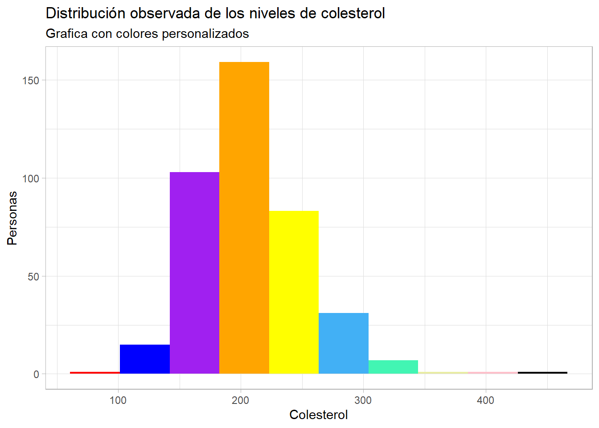
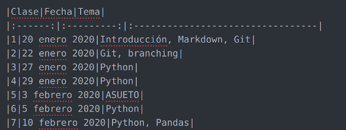
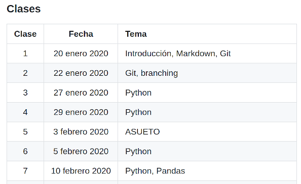
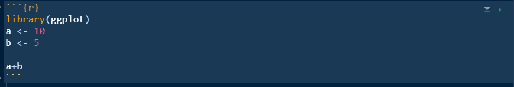
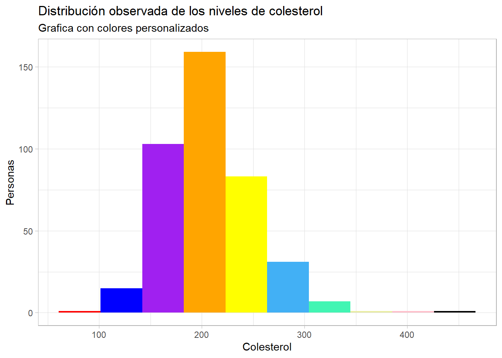

Warning: Removed 1 rows containing non-finite values (stat_bin).
Como ya vimos, Quarto provee una interfaz para generar reportes mediante el uso de texto y código. Consiste de tres tipos de archivo:
╭(◔ ◡ ◔)/.
Markdown es una forma de escribir contenido mediante plaintext. A diferencia de los procesadores tradicionales de texto, los archivos en Markdown tienen la ventaja de poder ser compartidos e interpretados fácilmente entre distintas sistemas operativos como macOS, Windows, Linux, iOS e incluso Android.
La mejor guía-resumen de Markdown se encuentra aquí.
La documentación completa para R Markdown (ahora Quarto). Se encuentra aquí.
### Algo aquíUn hash
Dos Hashes
Tres Hashes
Cuatro Hashes
**palabras en negritas**.*palabras en itálicas*.~~palabras rayadas~~., el tag es cualquier nombre que le quieras poner a tu imagen y que después puedas referirte a ella más adelante en tu texto, el path en tu computadora donde se encuentra la imagen. Por ejemplo: .[palabra que aparece con el link](URL/de/la/pagina). Por ejemplo: [Git tutorial](https://try.github.io/levels/1/challenges/1)+ lista de
+ cosas
+ en markdownque se vería así:
- lista de
- cosas
- en markdown
> Algo importante aquíGeneraría esto:
Algo importante aquí

Que se verá así:

Ya vimos la parte de la escritura. Ahora veamos como podemos combinar lo aprendido en la sección pasada con lo que vimos la semana pasada (R).
Para poder insertar (y correr) códigos de R dentro de nuestro documento de Quarto, necesitamos encerrar nuestras líneas de código dentro de dos pares de ```.
 Entre los corchetes podemos poner múltiples comandos para modificar el comportamiento de nuestro código. Algunos de los más comunes serían:
include = FALSE evita que el código y los resultados aparezcan en el archivo final aunque el código sí se ejecuta y los resultados pueden ser usados en otros pedazos de código.
echo = FALSE no imprime el código pero sí los resultados en nuestro documento final. Se usa mucho para generar gráficas.
Warning: Removed 1 rows containing non-finite values (stat_bin).
message = FALSE evita que mensajes generados por código aparezcan en el documento final.warning = FALSE evita que las advertencias o “warnings” generados por código aparezcan en el documento final.colores <- c('red',
'blue',
'purple',
'orange',
'yellow',
'#42b0f5',
'#42f5b3',
'#e9eda4',
'pink',
'black')
ggplot(diabetes)+
geom_histogram(aes(x=chol),bins = 10, fill = colores)+
labs(
x='Colesterol',
y='Personas',
title = "Distribución observada de los niveles de colesterol",
subtitle = 'Grafica con colores personalizados'
)+
scale_fill_manual()+
theme_light()
fig.cap = "..." agrega una nota al pie del código.diabetes <- read.csv('data/diabetes.csv')
colores <- c('red',
'blue',
'purple',
'orange',
'yellow',
'#42b0f5',
'#42f5b3',
'#e9eda4',
'pink',
'black')
ggplot(diabetes)+
geom_histogram(aes(x=chol),bins = 10, fill = colores)+
labs(
x='Colesterol',
y='Personas',
title = "Distribución observada de los niveles de colesterol",
subtitle = 'Grafica con colores personalizados'
)+
scale_fill_manual()+
theme_light()